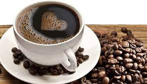
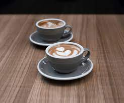
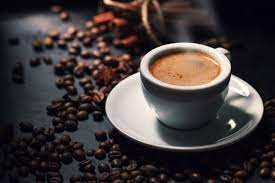
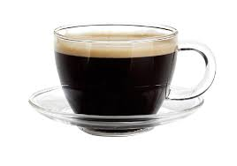
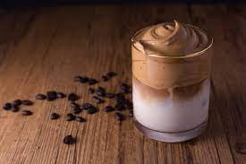
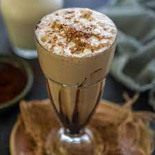

Coffee is a brewed drink prepared from roasted coffee beans, the seeds of berries from certain Coffea
species. From the coffee fruit, the seeds are separated to produce a stable, raw product: unroasted
green coffee.
Why you should love coffee...

Drinking Coffee Has Several Health Benefits
Packed with antioxidants and vitamins such as riboflavin, magnesium, and potassium, coffee can help to
lessen depression, promote a healthy heart, and reduce the risk of developing type 2 diabetes, Parkinson's
disease, Alzheimer's disease, liver disease, and liver cancer.
Some Disadvantages

Anxiety. Caffeine is known to increase alertness. ...
Insomnia. Caffeine's ability to help people stay awake is one of its most prized qualities. ...
Digestive Issues. ...
Muscle Breakdown. ...
Addiction. ...
High Blood Pressure. ...
Rapid Heart Rate. ...
Fatigue.
Our Coffees...
Espresso

Espresso is a coffee-brewing method of Italian origin, in which a small amount of nearly boiling
water is forced under 9–10 bars of pressure through finely-ground coffee beans. Espresso coffee can
be made with a wide variety of coffee beans and roast degrees.
Double Espresso

Doppio espresso is a double shot which is extracted using double the amount of ground coffee in a
larger-sized portafilter basket. This results in 60 ml of drink, double the amount of a single shot
espresso. Doppio is Italian multiplier, meaning "double".
Dalgona

Dalgona coffee is a beverage made by whipping equal parts instant coffee powder, sugar, and hot water until
it becomes creamy and then adding it to cold or hot milk. Occasionally, it is topped with coffee powder,
cocoa, crumbled biscuits, or honey.
Caffè Americano
Caffè Americano is a type of coffee drink prepared by diluting an espresso with hot water, giving it
a
similar strength to, but different flavor from, traditionally brewed coffee. The strength of an Americano
varies with the number of shots of espresso and the amount of water added.
Cappuccino
A cappuccino is an espresso-based coffee drink that originated in Italy, and is prepared with steamed milk
foam. Variations of the drink involve the use of cream instead of milk, using non-dairy milk substitutes and
flavoring with cinnamon or chocolate powder.
Cold Coffee

Iced coffee is a coffee beverage served cold. It may be prepared either by brewing coffee in the normal way
and then serving it over ice or in cold milk, or by brewing the coffee cold. In hot brewing, sweeteners and
flavoring may be added before cooling, as they dissolve faster.